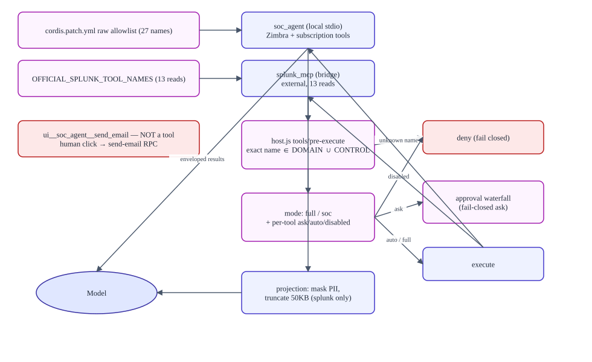

MCP and tool routing
Verified against commitb26d55d274cf298a456d84edfbcb42b8dc90134b(2026-09-11T15:35:35Z) · documentation verified 2026-09-12.
Presents: MCP_AND_TOOL_ROUTING.md — the Markdown file is the source of truth. Full tables: reference/MCP_TOOL_CATALOG.md.
Naming anatomy
A fully qualified MCP tool name is mcp__<server>__<raw-tool>. In mcp__splunk_mcp__splunk_run_query the word splunk appears in both portions — one product word in two different layers, still a single server. There are three identifier layers: cordis plugin id (splunk-official-mcp) → plugin package (dsh-soc-agent/splunk-bridge) → MCP server namespace (splunk_mcp).
Names that are not tools: ui__soc_agent__send_email (a UI-confirmed catalog entry — the human send path, never model-callable) and skill (an unprefixed host-provided tool).
zimbra_send_email does not send — it creates a local draft (classified read-only, labeled "Create email draft"). zimbra_use_signature_on_email also does not send. Retained-only tool names referenced by detection skills (splunk_get_detection, splunk_compile_citic_detection, …) are not registered at this commit.Routing layers

- Registration: raw
allowedToolNames— exactly 27 forsoc_agent, 13 reads forsplunk_mcp. - Restriction: the agent's tool set is restricted to
DOMAIN_TOOLS ∪ CONTROL_TOOLS(ask_user_question,exit_plan_mode). - Enforcement:
tools/pre-executeexact-name gate; mode/state logic; ask verdicts enter the fail-closed approval waterfall. - Identity metadata:
soc_session_id,soc_investigation_id, emptysoc_customer_id,soc_correlation_id,soc_deadline_ms(now + 180 s). - Output: projection (PII mask + 50 KB truncation) for Splunk results; envelopes for everything else.
The two servers
| soc_agent | splunk_mcp | |
|---|---|---|
| What | Local Python FastMCP server (stdio child) | Client bridge to an external official Splunk MCP server |
| Tools | 27: 12 mail, 9 filters, 6 subscriptions | 13 read tools |
| Identity | The signed-in user (Postgres session → their Zimbra token); account_id rejected | Service token (Bearer) from env |
| Failure mode | Spawn failure is fatal (failOnStartupError) | Disabled when endpoint/token missing; per-call errors otherwise |
| Guardrails | Local envelopes + validation + env gates | Remote server-side; local projection afterwards |
Read-only vs mutation
Read-only (29): skill + 13 Splunk reads + 12 Zimbra mail tools (the two draft builders write nothing) + 4 filter reads + 3 subscription reads. Mutations (12, default ask): move email, create folder, create/delete signature, five filter writes, three subscription writes — each additionally gated Python-side (ZIMBRA_ALLOW_*, filter fingerprints). UI-confirmed: ui__soc_agent__send_email cannot be automated.
How drift is prevented
Three synchronized inventories — the patch raw allowlist, policy.js qualified sets, and the bridge's raw names — are pinned from both language tiers: test_server_exposes_exact_domain_tool_set ↔ skills.test.js (same 27 names), policy.test.js (29/41/12), splunk-bridge.test.js (read-only bridge). Changing a tool requires the six-contract recipe in Development.